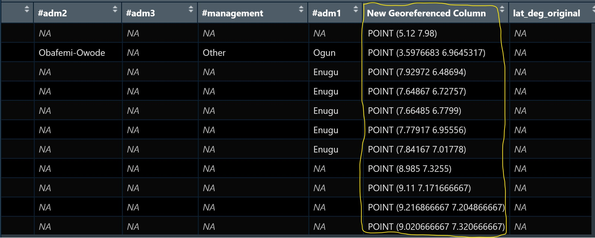
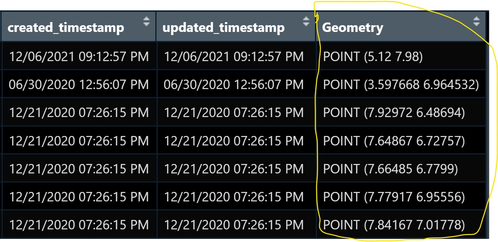
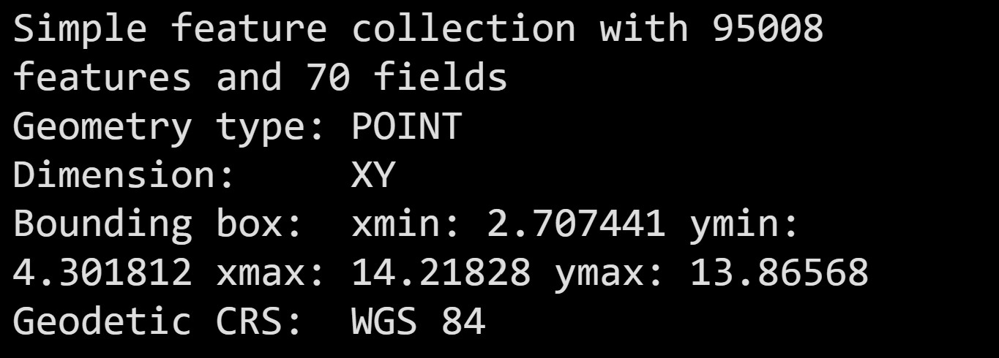
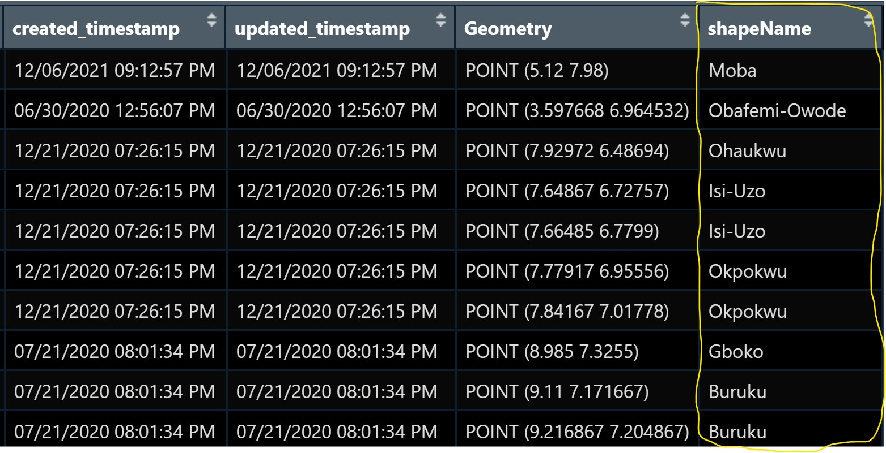

pacman::p_load(sf, tidyverse)In-Class Exercise 2a
Updated on: 5-Dec-2022
(First published on: 4-Dec-2022)
Regionalisation with Spatially Constrained Cluster Analysis
1 Overview
This note lists the ways to handle aspatial and geospatial data that could be useful for the spatial constrained cluster analysis. It covers:
importing geospatial data in wkt format into R,
converting the tibble data frame with wkt field into sf data frame, and
performing point-in-polygon overlay.
2 Getting Started
For this in-class exercise, 2 R packages will be used. They are:
sf for importing and processing geospatial data,
tidyverse for importing and processing non-spatial data. It contains
readr package for importing wkt data, and
dplyr package will be used to wrangling the data.
3 Import data
2 data sets are used for this exercise.
3.1 Water point data set
3.1.1 Import data
We use the following code chunk to import the water point data into R environment
wp_nga <- read_csv("Take-Home_Ex2a/data/WPdx.csv",show_col_types = FALSE) %>%
filter(`#clean_country_name` == "Nigeria")Things to note from the code chunk above:
The original file name is called Water_Point_Data_Exchange_-_PlusWPdx.csv, it has been rename to WPdx.csv for easy encoding.
Instead of using
read.csv()of Base R to import the csv file into R,read_csv()is readr package is used. This is because during the initial data exploration, we notice that there is at least one field name with space between the field name (ie. New Georeferenced Column)The data file contains water point data of many countries. In this study, we are interested on water point in Nigeria on. Hence,
filter()of dplyr is used to extract out records belong to Nigeria only.
3.1.2 Convert Well Know Text data into a sf data frame
After the data are imported into R environment, it is a good practice to review both the data structure and the data table to check if it is in tibble data frame format in R Studio.
Notice that the newly imported tibble data frame (i.e. wp_nga) contains a field called New Georeferenced Column which represent spatial data in a textual format. In fact, this kind of text file is popularly known as Well Known Text in short wkt.

The 2 steps needed to convert an asptial data file in wkt format into a sf data frame are:
First,
st_as_sfc()of sf package is used to derive a new field called Geometry as shown in the code chunk below.wp_nga$Geometry = st_as_sfc(wp_nga$`New Georeferenced Column`)If we open wp_nga data frame and scroll to the last field now, we will see that a new field called Geometry has been added as shown below.

- We use
st_sf()to convert the tibble data frame into a sf data frame.
wp_sf <- st_sf(wp_nga, crs=4326) When the process is completed, a new sf data frame called wp_sf will be created.
wp_sf
3.2 Niegeria LGA level boundary data
Shapefile downloaded from geoBoundaries portal will be imported in st_read of sf package.
nga <- st_read(dsn = "Take-Home_Ex2a/data",
layer = "geoBoundaries-NGA-ADM2",
crs = 4326) %>%
select(shapeName)4 Point in Polygon Overlay
Although wp_sf sf data frame consists of a field called #clean_adm2 which by right should provide the LGA name of the water point, it is always a good practice to be more cautious when dealing with external data.
In this section, we are going to use a geoprocessing function (or commonly known as GIS analysis) called point-in-polygon overlay to transfer the attribute information in nga sf data frame into wp_sf data frame.
wp_sf_joined <- st_join(wp_sf, nga)Notice that a new field called shapeName has been added into wp_sf sf data frame. as shown below.

Now we can apply appropriate data wrangling functions of dplyr to extract the necessary clustering variables by using this data frame.